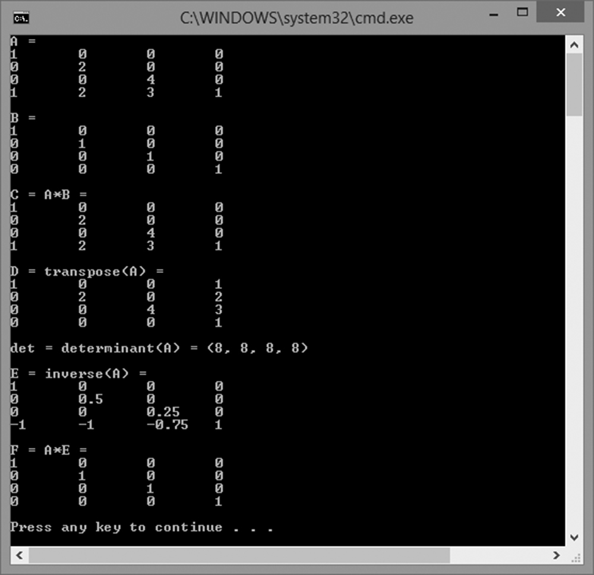
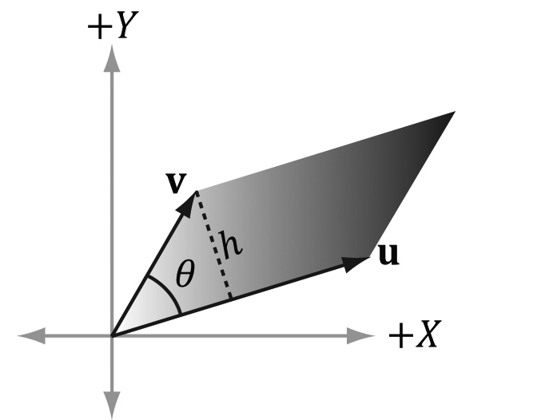

本章学习目标（Objectives）
- 理解矩阵的概念及其与向量运算的关系；
- 掌握矩阵乘法、转置、单位矩阵、行列式、伴随与逆矩阵；
- 熟悉 DirectXMath 库中矩阵类型与函数的用法。
矩阵是 m×n 个数排成的矩形阵列。在 3D 图形学里，矩阵是变换的载体：缩放、旋转、平移、世界/视图/投影变换全都由矩阵表达。学完这章你就能看懂着色器里那行天天出现的 mul(gWorldViewProj, pos)。
2.1 矩阵的定义
m×n 矩阵有 m 行 n 列，元素用小写字母 + 行列下标标记。行向量、列向量就是只有一行/一列的特殊矩阵。相等的矩阵要求形状相同且对应元素相等；加/减法要求同形状，逐元素进行；标量乘法逐元素乘。
2.2 矩阵乘法
定义
A 是 m×n 矩阵、B 是 n×p 矩阵，则 AB 是 m×p 矩阵。结果第 i 行第 j 列 = A 的第 i 行 与 B 的第 j 列的点积：
2.2.2 向量-矩阵乘法
行向量左乘矩阵：vAB 的写法——把向量看成 1×n 矩阵即可。书中约定用行向量 × 矩阵：v′ = vM，这与 DirectXMath 的 XMVector3Transform 一致。几何上 vM 的结果是把 v 变换后的新向量（第 3 章展开讲）。
2.2.3 结合律
矩阵乘法满足结合律：(AB)C = A(BC)。图形学中常把一连串变换预先合并成一个矩阵 C = A·B·C，再用 C 一次性变换成千上万个顶点，省下大量计算。
2.3 转置矩阵（Transpose）
把行列互换：(Aᵀ)ij = Aji。性质：(AB)ᵀ = BᵀAᵀ、(Aᵀ)ᵀ = A。行向量 vs 列向量的书写差异（不同引擎/教材两种约定）就靠转置换算——看别人着色器代码时务必确认约定。
2.4 单位矩阵（Identity Matrix）
主对角线全 1、其余全 0 的方阵 I。它是矩阵里的"1"：MI = IM = M。任何向量乘单位矩阵都不变——相当于"恒等变换"。
2.5 行列式（Determinant）
方阵对应一个标量 det(A)（记 |A|）。2×2 直接交叉相乘：ad − bc。更大的方阵用递归展开：det(A) = Σ (−1)^(1+j)·A₁ⱼ·det(Ã₁ⱼ)，即沿第一行展开为多个低阶行列式。
2.5.1 余子式（Matrix Minors）
删掉第 i 行第 j 列后剩下的 (n−1)×(n−1) 方阵的行列式称为余子式。带上 (−1)^(i+j) 符号就得到代数余子式。
行列式的几何意义：它等于矩阵把空间"拉伸/压缩"的面积/体积比例因子。det = 0 说明变换把空间压扁了（不可逆）；det < 0 说明发生了镜像翻转。第 5 章会提到：背面剔除其实就是在看变换后行列式的符号变化。
2.6 伴随矩阵（Adjoint）
把每个元素换成对应的代数余子式再转置：adj(A) = (A~)ᵀ。它是求逆矩阵的中间产物。
2.7 逆矩阵（Inverse Matrix）
A⁻¹ 是满足 AA⁻¹ = A⁻¹A = I 的矩阵。并非所有矩阵可逆（可逆 ⟺ det ≠ 0）。求逆公式：
常用性质：⁻¹ = B⁻¹A⁻¹（顺序反过来！又见"顺序很重要"）、(Aᵀ)⁻¹ = (A⁻¹)ᵀ。
图形学意义：M 把坐标系 A 映射到 B，则 M⁻¹ 就是 B 映射回 A——第 3 章"坐标系变换"就靠它。
2.8 DirectXMath 矩阵
核心类型 XMMATRIX：4×4 矩阵，由 4 个 XMVECTOR 行组成，完全 SIMD 化。XMFLOAT4X4 用于存储（成员 _11.._44 或 m[i][j]），Load/Store 转换。参数传递沿用 FXM/GXM/HXM/CXM 规则。
XMMATRIX A(1,0,0,0, 0,2,0,0, 0,0,4,0, 1,2,3,1); // 按行构造 XMMATRIX B = XMMatrixIdentity(); // 单位矩阵 XMMATRIX C = XMMatrixMultiply(A, B); // 乘法（或用运算符 *） XMMATRIX D = XMMatrixTranspose(A); // 转置 XMVECTOR det = XMMatrixDeterminant(A); // 行列式（在返回向量的 x 分量） XMMATRIX E = XMMatrixInverse(&det, A); // 逆矩阵（需先算行列式） // 向量变换：v' = vM（行向量约定） XMVECTOR v2 = XMVector3Transform(v, A);
XMMatrixTranspose——HLSL 默认按列主序解释，书里行向量约定需要转置后再上传。这个"为什么"在第 7 章会讲透。本章小结
- 矩阵乘法：行点积列；内维相等才能乘；不交换、可结合——预合并变换链是重要优化。
- 转置换行换列；(AB)ᵀ = BᵀAᵀ。
- 单位矩阵 I 是恒等变换；行列式是体积比例因子（0 = 压扁不可逆）。
- 逆矩阵 A⁻¹ = adj(A)/det(A)；(AB)⁻¹ = B⁻¹A⁻¹。
- DirectXMath：XMMATRIX 计算 / XMFLOAT4X4 存储，XMMatrix* 函数族，行向量变换用 XMVector3Transform。
🖼️ 原书插图（2 张，点击展开）

